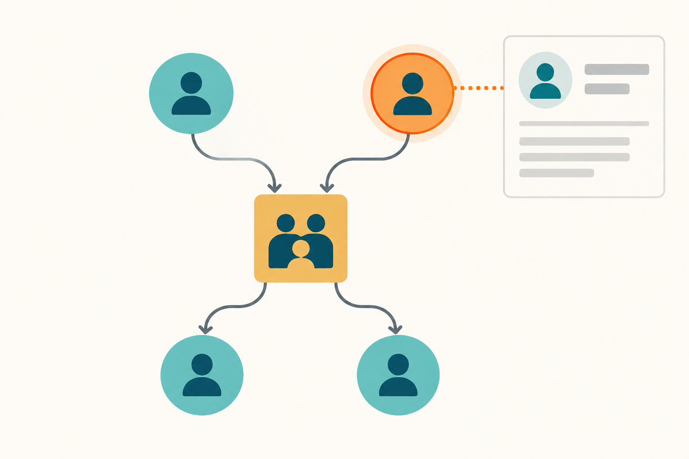

Using the relationship graph
This viewer maps the genealogy as a relationship network. It is useful for following connections across several branches, comparing source-backed relationships, and exporting a view of the graph.

Read the diagram
Circles represent people. Square hubs represent family records: incoming arrows connect recorded partners to the family, and outgoing arrows connect the family to recorded children. A solid line is a main-line record, a dashed line is spouse ancestry, and a dotted line is collateral family material.
Navigate and inspect
Drag the diagram to pan and use the mouse wheel, trackpad, or pinch gesture to zoom. Hover over a node to see its label. Click a person or family hub to open its registry details and source evidence in the side panel. Drag the divider beside that panel to resize it.
In Appearance, choose Pedigree (top-down) to show parents, family hubs, and children in rows, or Radial tree to place each component’s earliest recorded family hub at the center. Each child’s later families and descendants occupy a continuous arc extending outward from that hub. Use the fit icon to show the whole current graph. The readable-view icon enlarges the current layout for reading labels and branches.
Find and focus people
Enter a name or exact person ID in Find a person. Search accepts Polish names with or without diacritics. Press Return to select the first result and press it again to cycle through matches. Once a person is selected, Show direct ancestors limits the graph to that person and their recorded ancestors.
Filter the graph
- Source chart limits the graph to evidence associated with one chart. A source may support a whole family record or only selected partner and parent-child relationships.
- Branches lets you include or hide main-line, spouse-ancestry, and collateral records.
- Labels controls whether labels appear automatically, never, or on every node.
- Layout changes only the position of the current records; it does not add, remove, or resolve relationships.
- Color matching people highlights names containing the entered text with the selected color.
Reset and export
Reset restores the unfiltered graph and default appearance. Download PNG saves a high-resolution image of the current graph, including the full diagram rather than only the visible viewport.
The graph presents the registry as recorded. Unknown values, source notes, and competing parent accounts remain visible; filters and layouts do not resolve those historical uncertainties.